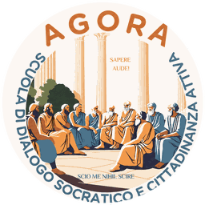
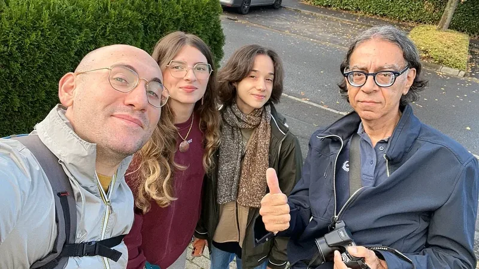
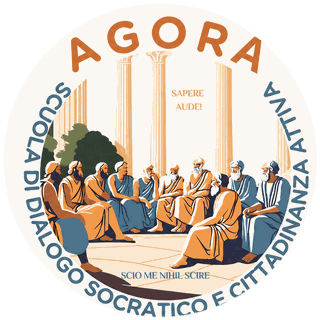
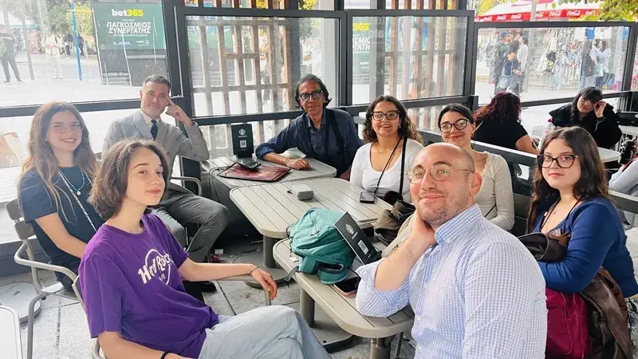

Educazione non formale
Laboratori cooperativi per apprendere attraverso esperienza, riflessione e dialogo.

Agorà APSScuola di dialogo socraticoSiamo Agorà: uno spazio per incontrarsi, pensare insieme e scoprire l’Europa. La nostra storia comincia da una domanda.
Una storia di persone, domande e nuovi orizzonti.


La nostra associazione
Siamo un’associazione di promozione sociale nata in Sicilia. Creiamo occasioni per incontrarsi, confrontare le idee e partecipare alla vita della comunità.
Con il dialogo socratico e i progetti europei, apriamo nuove possibilità ai giovani, anche a chi incontra più ostacoli.
Entra in contatto con Agorà
Il nostro approccio
Partiamo da una domanda. Ascoltiamo punti di vista diversi e cerchiamo insieme nuove risposte. Nei nostri laboratori non serve avere ragione: serve la voglia di mettersi in gioco.
Partecipa a un laboratorioI nostri strumenti
Il valore educativo nasce dal processo e dalle persone che ne fanno parte.
Laboratori cooperativi per apprendere attraverso esperienza, riflessione e dialogo.
Progetti Erasmus+ e percorsi interculturali per favorire accesso e cittadinanza attiva.
Documentiamo le esperienze e condividiamo strumenti, testimonianze e materiali educativi.
Il nostro impegno
Impariamo a interrogare la realtà, insieme. L'Agorà è uno spazio aperto alle differenze, alla curiosità e al confronto.
Ogni prospettiva diventa un'occasione per pensare con maggiore profondità.
Le nostre esperienze
Viaggi, laboratori e incontri: tre modi per crescere insieme.
Un viaggio per esplorare l'Europa attraverso la filosofia e l'incontro.
Odisseo Philosophorum, progetto Erasmus+ KA155-YOU, ha coinvolto cinque giovani in un percorso di mobilità e apprendimento non formale.
Scopri il percorsoLaboratori di media literacy, pensiero critico e confronto sulla disinformazione, con attività realizzate a Catania nel 2026.
Conosci il metodoSocratic Dialogue Labs for Democratic Resilience: cooperazione europea per rafforzare il dialogo e la resilienza democratica.
Chiedi informazioniApri un progetto per saperne di più.

Tirocini universitari
Metti in pratica ciò che studi: comunicazione culturale, progettazione europea e organizzazione di attività educative, insieme al gruppo di Agorà.
Agorà è ente convenzionato per l’avvio di tirocini. Ogni percorso nasce da un progetto formativo concordato con l’Ateneo.
Studi in un altro ateneo? Contattaci per verificare la convenzione o valutare l’attivazione di un nuovo percorso.

Corpo europeo di solidarietà
Vuoi vivere un’esperienza di volontariato europeo? Agorà ti accompagna come organizzazione di sostegno del Corpo europeo di solidarietà.
Approvazione comunicata dall’Agenzia Italiana per la Gioventù il 30 luglio 2026.
2026-1-IT03-ESC50-QLA-000469866
Orientamento, ricerca delle opportunità e preparazione all’esperienza.
Un riferimento con cui restare in contatto, insieme all’organizzazione di accoglienza.
Riflessione sull’esperienza e valorizzazione di ciò che hai imparato.
Responsabilità associativa
La fiducia nasce dalla chiarezza. Qui puoi richiedere i documenti e conoscere il nostro lavoro, le attività e le opportunità di partecipazione.
Statuto, informazioni associative, progetti e graduatorie quando pertinenti e pubblicabili.
Richiedi i documentiRestiamo in dialogo
Vuoi partecipare, proporre un’idea o conoscerci? Scrivici. Ogni incontro può diventare l’inizio di qualcosa.
Scrivi ad AgoràScuola di Dialogo Socratico e Cittadinanza Attiva
Ci trovi a Motta Sant’Anastasia, in Sicilia. Le nostre idee viaggiano in tutta Europa.